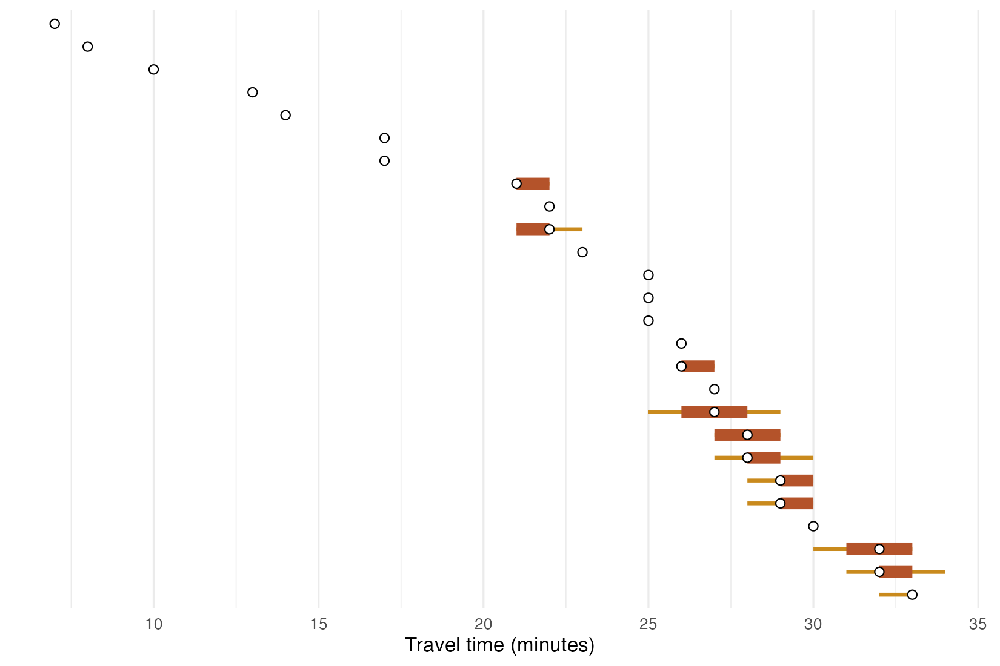
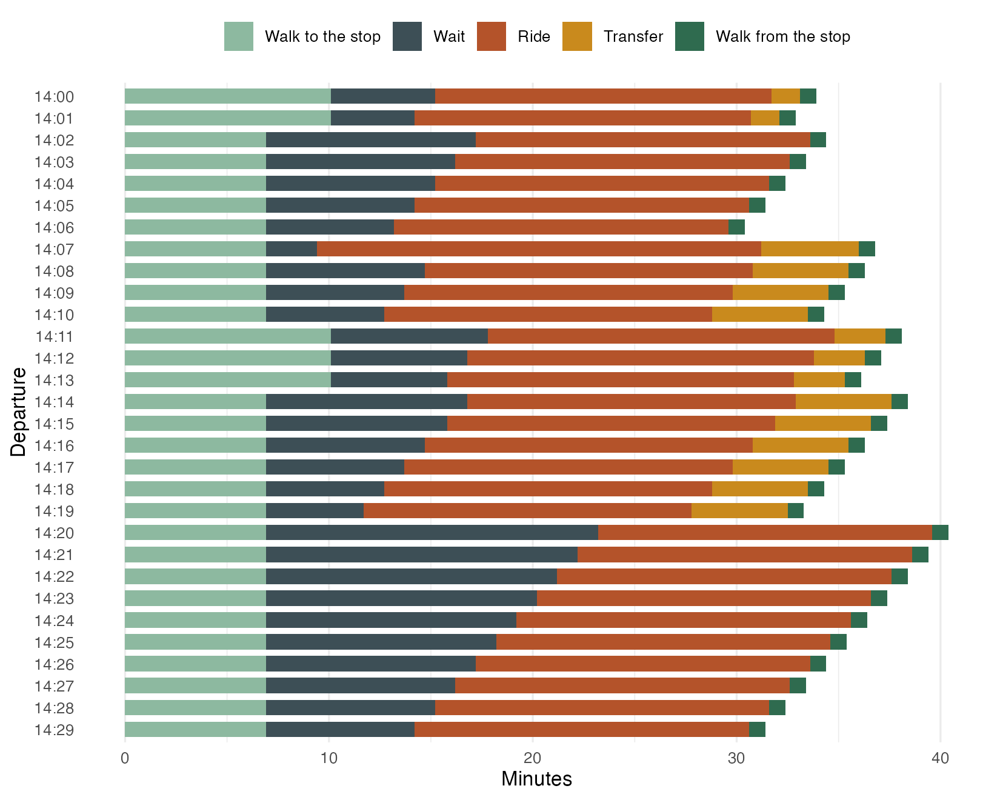

By car or on foot, a trip takes the same time whenever it starts. By public transport it does not: it depends on when the next vehicle leaves. This example measures that variation in two ways, with percentiles over a window of departures, and trip by trip. Everything below is one script; the output shown is the output it prints.
Percentiles on a frequency-based network
The São Paulo sample that ships with the package has a feed described
by frequencies (“a bus every 8 minutes”) rather than timetables. For
such routes peabiru draws random schedules consistent with the
frequencies, 5 per departure minute by default, so the travel times of a
window of departures form a distribution. seed makes the
draws reproducible.
spo <- system.file("extdata/spo", package = "peabiru")
network <- build_network(spo)
points <- read.csv(file.path(spo, "spo_points.csv"))
departure <- as.POSIXct("2019-05-13 14:00:00", tz = "America/Sao_Paulo")
ttm <- travel_time_matrix(
network, points[1, ], points[-1, ],
mode = c("WALK", "TRANSIT"),
departure_datetime = departure,
time_window = 60,
percentiles = c(5, 25, 50, 75, 95),
seed = 42
)
ttm <- ttm[order(ttm$travel_time_p50, ttm$travel_time_p95), ]
head(ttm)
#> # A tibble: 6 × 7
#> from_id to_id travel_time_p05 travel_time_p25 travel_time_p50 travel_time_p75
#> <chr> <chr> <int> <int> <int> <int>
#> 1 89a8100… 89a8… 7 7 7 7
#> 2 89a8100… 89a8… 8 8 8 8
#> 3 89a8100… 89a8… 10 10 10 10
#> 4 89a8100… 89a8… 13 13 13 13
#> 5 89a8100… 89a8… 14 14 14 14
#> 6 89a8100… 89a8… 17 17 17 17
#> # ℹ 1 more variable: travel_time_p95 <int>The destinations closest to the origin are walked to, and every departure takes the same time. Further away, a bus or the metro saves time, and the spread between the 5th and 95th percentiles is the price of not knowing when it comes:
ttm$destination <- factor(ttm$to_id, levels = rev(ttm$to_id))
ggplot(ttm, aes(y = destination)) +
geom_linerange(aes(xmin = travel_time_p05, xmax = travel_time_p95),
colour = "#c98a1d", linewidth = 1) +
geom_linerange(aes(xmin = travel_time_p25, xmax = travel_time_p75),
colour = "#b4532a", linewidth = 3) +
geom_point(aes(x = travel_time_p50), shape = 21, fill = "white", size = 2) +
labs(x = "Travel time (minutes)", y = NULL) +
theme_minimal() +
theme(axis.text.y = element_blank(), panel.grid.major.y = element_blank())
Trip by trip
expanded_travel_time_matrix() keeps one row per
departure minute (and per draw, on a frequency-based network) instead of
percentiles. With breakdown = TRUE, each trip is split into
its parts, and the routes taken are listed. Here, from Farroupilha Park
to the PUCRS university campus in Porto Alegre, whose sample data (from
the r5r project, version 2.5.0) has bus timetables:
poa <- file.path(tempdir(), "poa")
dir.create(poa, showWarnings = FALSE)
url <- "https://raw.githubusercontent.com/ipea/r5r/v2.5.0/r-package/inst/extdata/poa/"
for (f in c("poa_osm.pbf", "poa_eptc.zip", "poa_trensurb.zip",
"poa_points_of_interest.csv")) {
if (!file.exists(file.path(poa, f))) {
download.file(paste0(url, f), file.path(poa, f), mode = "wb", quiet = TRUE)
}
}
poa_network <- build_network(poa)
poi <- read.csv(file.path(poa, "poa_points_of_interest.csv"))
trips <- expanded_travel_time_matrix(
poa_network,
origins = poi[poi$id == "farroupilha_park", ],
destinations = poi[poi$id == "pucrs", ],
mode = c("WALK", "TRANSIT"),
departure_datetime = departure,
time_window = 30,
breakdown = TRUE
)
head(trips[, -(1:2)], 10)
#> # A tibble: 10 × 10
#> departure_time draw_number access_time wait_time ride_time transfer_time
#> <chr> <int> <dbl> <dbl> <dbl> <dbl>
#> 1 14:00:00 1 10.1 5.1 16.5 1.4
#> 2 14:01:00 1 10.1 4.1 16.5 1.4
#> 3 14:02:00 1 6.9 10.3 16.4 0
#> 4 14:03:00 1 6.9 9.3 16.4 0
#> 5 14:04:00 1 6.9 8.3 16.4 0
#> 6 14:05:00 1 6.9 7.3 16.4 0
#> 7 14:06:00 1 6.9 6.3 16.4 0
#> 8 14:07:00 1 6.9 2.5 21.8 4.8
#> 9 14:08:00 1 6.9 7.8 16.1 4.7
#> 10 14:09:00 1 6.9 6.8 16.1 4.7
#> # ℹ 4 more variables: egress_time <dbl>, routes <chr>, n_rides <int>,
#> # total_time <dbl>Leaving at 14:02 or at 14:20 means boarding the same line, but waiting longer for it; at 14:07 a different pair of buses wins. Stacked bars show where the minutes go:
parts <- c(access_time = "Walk to the stop", wait_time = "Wait",
ride_time = "Ride", transfer_time = "Transfer",
egress_time = "Walk from the stop")
long <- do.call(rbind, lapply(names(parts), function(p)
data.frame(departure = substr(trips$departure_time, 1, 5),
part = factor(parts[[p]], levels = rev(parts)),
minutes = trips[[p]])))
ggplot(long, aes(minutes, departure, fill = part)) +
geom_col(width = 0.7) +
scale_y_discrete(limits = rev) +
scale_fill_manual(values = c("#8db9a0", "#3d4f56", "#b4532a", "#c98a1d", "#2f6b4f"),
breaks = unname(parts), name = NULL) +
labs(x = "Minutes", y = "Departure") +
theme_minimal() +
theme(legend.position = "top", panel.grid.major.y = element_blank())
Variations
-
Arrive by.
arrival_travel_time_matrix()answers the reverse question: the latest departure that arrives by a given time. -
Fewer transfers.
max_rides = 1keeps only the trips with a single vehicle; compare the totals. -
More draws.
draws_per_minutesets how many random schedules are drawn per minute on frequency-based routes.
The figures on the home page
draw the same results with site/figures/figures.R in the
repository.